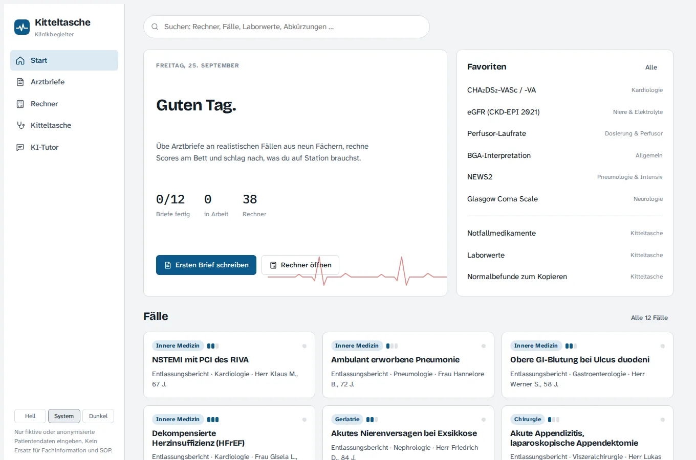

Ich studiere Medizin im klinischen Abschnitt an der Universität des Saarlandes. Mich fasziniert der Bewegungsapparat: wie Menschen sich bewegen, sich verletzen und wieder zurückkommen. Außerhalb der Klinik fechte ich und trainiere.
Stationen
bis Zürich.
02 · WerdegangStart Medizinstudium
Universität des Saarlandes, Campus Homburg.
Physikum
Erster Abschnitt der Ärztlichen Prüfung, danach Wechsel in den klinischen Abschnitt.
Orthopädie
Famulatur am Universitätsklinikum des Saarlandes in Homburg.
PJ in Basel
Innere Medizin und Chirurgie am Universitätsspital Basel.
Orthopädie in Zürich
Wahltertial an der Schulthess Klinik Zürich.
Was ich
gebaut habe.

Visite
Ein Klinikbegleiter für Station und Notaufnahme: Arztbrief-Assistent, Medikations-Check, über 160 klinische Scores und Rechner, dazu Übungsfälle mit Musterbrief.
Öffnenmedi.cards
Folien als PDF oder PPTX hochladen, die KI erzeugt daraus quellenbasierte Anki-Karten mit Seitenangabe. Gebaut fürs Medizinstudium.
ÖffnenDer Ausgleich.
Fechten, Degen
Distanz, Timing und Entscheidungen unter Druck.
Laufen & Kraft
Ausdauer auf der Straße, Krafttraining seit 2021.
Lass uns
sprechen.
Für fachlichen Austausch oder Fragen zu meinen Projekten. Den Lebenslauf verschicke ich auf Anfrage per E-Mail.
joshuaforster02@gmail.com